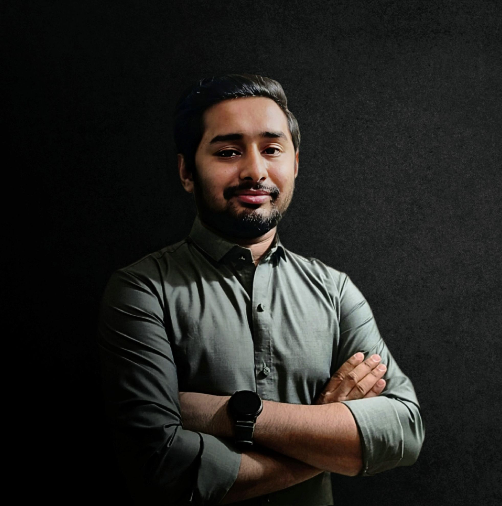

Machine Learning Engineer | Software Engineer
Specializing in Computer Vision, NLP, Business Intelligence, and Healthcare, I'm passionate about Applied Machine Learning, Large Language Models, and Generative AI.
I'm an AI researcher and engineer focused on building intelligent, responsible, and impactful technology. My work is in applied machine learning and agentic AI, specifically developing advanced AI agents using large language models (LLMs), retrieval-augmented generation (RAG), and multi-modal architectures.
With a strong foundation in deep learning, NLP, and real-world system integration, I specialize in designing and deploying AI agents that are technically robust, ethical, and user-centric. These systems reason, learn, and act autonomously in dynamic environments, from adaptive personal assistants to scalable decision-support tools.
I thrive on solving complex problems, from designing intelligent pipelines to optimizing performance, always ensuring AI solutions are accessible and explainable. My approach combines technical rigor with a research mindset, bridging theory and practical deployment.
I'm also passionate about contributing to open-source and exploring AI's evolving landscape. I bring a collaborative spirit and commitment to innovation to all my endeavors, whether fine-tuning LLMs, implementing RAG pipelines, or guiding peers.
A diverse toolkit for designing, building, and optimizing intelligent systems.
GPT, BERT, Claude, LLaMA, DeepSeek, LangChain, LangGraph
PyTorch, TensorFlow, Keras, Scikit-learn, OpenCV, NLTK, HuggingFace, Fine-tuning, Prompt Engineering, Generative AI, RAG, FAISS, Chroma, Pinecone, NLP, Statistical Analysis, Data Cleaning
Python, C/C++, Java, JavaScript, Git, SQL (advanced), MySQL, MongoDB, Bash
Pandas, NumPy, SciPy, Matplotlib, Seaborn
FastAPI, React.js, Django, PHP, Streamlit
AWS (SageMaker, Lambda, Step Functions), Azure (Azure ML, Azure Functions), GCP (Vertex AI, Google Cloud Functions), Docker, GitHub Actions, CI/CD Tools
Strong Communication, Team Collaboration, Analytical Thinking, Quantitative Analysis, Problem-Solving, Adaptability